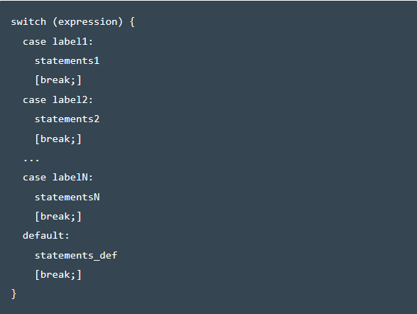

Acts like a big if / else if / else chain. Checks a value against a list of cases, and executes the first case that is true. It goes on executing all other cases it finds after the first true case till it finds a breaking statement,after which it breaks out of the switch If it does not find any matching case , it executes the default case.
